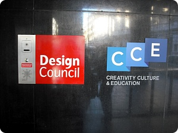
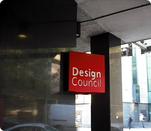
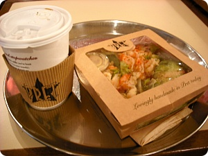
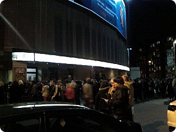

싫어하는 일 리스트중에 제법 상위권을 차지하는게
일주일내내 외출하기
- 쓰레빠로 동네커피숍 마실가는게 아니라 지하철이나 버스를이용해서
지역이동을 해야하는경우 - 인데
이번주가 그랬다;;; OTL
일월화 는 일땜에 거의 하루종일 밖에서 보냈구
수요일은 워크샵
사실 이 워크샵땜에 영국돌아오는 날짜를 맞췄다고해도
과언이 아닌^^;;
먼 옛날 KPMG ART PROJECT를 하믄
샘플제작비와 함께 요 D&AD워크샵 수강료도
대신 지불해줘서 수업에 참가할수있는데
D&AD 홈갔다가 깜놀;;
오전4시간 오후4시간 수업인데
수업료가 각 ￡360????(차라리 돈으로줘)
The Creative Ideas Day1 - Fireproofing the Idea
The Creative Ideas Day2 - Selling the Idea
내가 들은건 요 두개

코벤트 가든에 있는 Design Council
내부 인테리어 징짜 멋졌다+_+

아무생각없이
공짜수업이라니 아이좋아~데헤헤
이러고 갔더니만
수업듣는 8명의 사람중 나만빼고
이미 10년가까이 실무경력이있는
크리에이티브디렉터,아트디렉터,디자이너분들
후덜덜덜
아니 왜 절 이런곳으로 보내셨나요;ㅂ;
4시간짜리 수업이라 지루할거라 생각했는데
강사분이 느므 재미있었다
그리고 일방적으로 강의를 듣는게 아니라
간단한 프로젝트를 함께진행하믄서 피드백을 주고받는거라
다른사람 아이디어 듣는 재미가 쏠쏠^^***
+
저번 프레젠테이션 때도 느꼈지만
드링크바 촘 짱인거 같다ㅋㅋㅋ
구석에 마련된 각종 티백이랑 커피 쿠키등등
수업들으면서 종일 커피를 들이부었다능;;;;

요건 오전수업 끝나고 먹은 점심
프렛 샐러드랑 커피
길에 자주보이는데 이상하게 안들어가는 커피숍
이날 처음 이용해봤음
샐러드 맛있더군욤////ㅎㅎㅎㅎㅎ
목요일
학교에 볼일있어서
오랜만에 메이드스톤 방문
그래도 2년 살았다고 도착하니 뭔가 안정이 되는것이
학교서 선생님 만나구 타운센터로 슬렁슬렁 넘어가서
항상 들리던 가게 구경좀 하고 여기저기 돌아댕기다가
런던으로 돌아왔당
아아 사람들 다 친절해 ㅜㅜ
징짜 이동네는 지금생각해보면 이 지역에 어학교가 하나도 없어서
유학생비율이 적은거 같기도한데;
학교생활하는동안 학교선생님부터 같은과친구들에
행정처리해주는 사무실직원 심지어 동네 가게 사람들도 다 친절했다 ㅜㅜ
워어~좋은 동네야 ㅎㅎㅎㅎㅎㅎ
금요일
맥프로그램 설치로 Oxford circus
학교에서 풀 셋팅된 맥만 쓰다가
처음부터 내가 다 할려니
뭐가뭔지 하나도 몰라서 인터넷커뮤니티에 sos
그랬더니 천사님이 나타나셨다
이날 정말 신세 많이졌어요 ㅜㅜ 흑흑흑
이것저것 많이 알려주시고 유용한 어플도 많이 주시고
감샤감샤
그리고 오늘은
어제 뭐 말한번 잘못했다가
(잘못했다기 보다는 넘 무심했달까 배려가 없었달까;;☞☜)
또 우쭈쭈~해줘야 할일이 생겨서
해머스미스 방문..........OTL
제...........제길 남자로 태어났어야 하나 ㅜㅜ

그리고 집으로 돌아가는 길에 HMV아폴로에 엄청난 검은무리가 있어서
오늘은 누가 공연하나 했더니 MCR이었음
어머 이게 어쩐일이여
먼옜날(?) 일본서 섬소댕기고 한때 이모가 붐이였을때
공연도 댕기고했었는데
반가워라
나도 공연가고싶다아~~~쩝
일주일에 하루정도는 집에서 뒹굴어야하는데
내리 외출했더니 촘 지쳤다;;
낼부터 삼일연속으로 또 나가야해 ㅜㅜ
제..........제길;; 수요일에는 집에서 꼼짝도 안할테다 ㅜㅜ